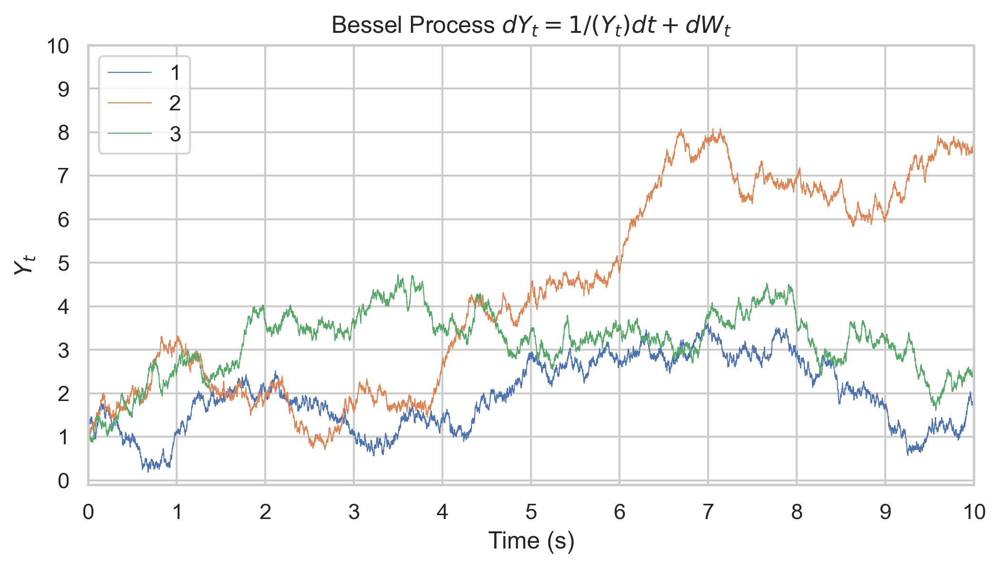

This will be a math-intensive chapter, introducing some basics of stochastic calculus, which the reader is not assumed to have experience with.
Not much biology or chemistry knowledge will be needed. Basics of probability and statistics will be needed.
Motivation
Stochastic processes appear in many contexts in biology, not limited to:
Evolution
Molecular Simulation
Enzyme Kinetics
Neuroscience
When # of molecules is low
Contents
This chapter will focus on both discrete-time and continuous-time stochastic processes.
We will begin with Markov chains and Random Walks. Later, Brownian Motion and Poisson processes will be covered.
Discrete Time Stochastic Processes
Starting Concepts
Filtration
An important concept in stochastic processes is what a filtration is.
Informally, we can consider a filtration at time t, denoted \(\mathcal{F}_t\) to be all the information that is available by time t, or the history of events up to time t.
As time progresses, this collection does not decrease.
Using our set theory notation from the probability chapter, we can write
$$\mathcal{F}_s\subseteq \mathcal{F}_t$$
for all \(s\leq t\).
A stochastic process \(X_t\) is adapted to \(\mathcal{F}_t\) if the value of \(X_t\) can be determined at time t for all t.
In a Markov chain, the transition probabilities from time t to time t+1 only depends on the state at time t, rather than the whole filtration. This is called the Markov property.
Discrete-Time Markov Chains
Imagine a system where a protein is in one of two states: A or E. Each minute you observe its state, and it has the ability to go from state A to E or E to A, but it does not necessarily switch. We will denote these observational periods at \(t=0, 1, \ldots\)
An important assumption that we will make is that only the current state determines the probability of switching conformations the state that it was in prior to this observation have no impact on the chances.
E.g. if we are at t=n, the state that the protein was in at t=n-1 has no impact on the probability for t=n+1.
This is called the Markov property.
For simplicity's state, we will assume that these observations are discrete events and not worry about what happens outside of our regular 1-minute interval observations.
By Joxemai4 - Own work, CC BY-SA 3.0, Link
We are given the dynamics of the protein conformational changes:
If the protein is in state A, it has a 40% chance of switching to the E state by the next observation and a 60% chance of remaining in the A state.
If the protein is in state E, it has a 70% chance of switching to the A conformation by the next observation and a 30% chance of remaining in the E state
Given a start state, we can determine the probability, not just of the next minute, but subsequent observations as well.
This can be represented naturally using Linear Algebra.
$$\begin{bmatrix}
0.6 & 0.4\\
0.7 & 0.3
\end{bmatrix}$$
Where the row is the starting state and the column is the final state.
For our starting state vector, if we are in the A state, we can put a 1 in the first column and a 0 elsewhere:
$$\begin{bmatrix}
1 & 0
\end{bmatrix}$$
It is not actually necessary to know the starting state to make statements on the probability of the state over time. We can have our start be a probability distribution instead.
To get the probability of being in each state after 1 interval, we can multiply the two:
$$\begin{bmatrix}
1 & 0
\end{bmatrix}\begin{bmatrix}
0.6 & 0.4\\
0.7 & 0.3
\end{bmatrix}=\begin{bmatrix}
0.6 & 0.4
\end{bmatrix}$$
We observe a 60% chance of remaining in state A and a 40% chance of transitioning to state E as expected at t=1.
We can use this result to see what the probability of being in each state are at t=2
$$\begin{bmatrix}
0.6 & 0.4
\end{bmatrix}\begin{bmatrix}
0.6 & 0.4\\
0.7 & 0.3
\end{bmatrix}$$
$$=\begin{bmatrix}
0.6*0.6+0.7*0.4 & 0.6*0.4+0.4*0.3
\end{bmatrix}$$
$$=\begin{bmatrix}
0.64 & 0.36
\end{bmatrix}$$
We can view this as plugging in a probability distribution into a Markov chain rather than knowing the initial state.
A general formula for the probability distribution at time t=n would thus be:
$$\begin{bmatrix}
p_{A,t=0} & p_{E,t=0}
\end{bmatrix}\begin{bmatrix}
p_{A\rightarrow A} & p_{A\rightarrow E}\\
p_{E\rightarrow A} & p_{E\rightarrow E}
\end{bmatrix}^n$$
But what are the long-run probabilities? What if we just came across this natively (assuming the same dynamics) - what would we expect our chances of finding it in a given state are?
Analytic Answer
For an analytical solution, we can try to find a stationary point for the transition matrix:
If the state distribution will not change over time, then it would have this property:
$$P T = P = P I$$
where P is the state distribution vector, T is the transition matrix, and I is the appropriate sized identity matrix. This is a straightforward eigenvector calculation.
In Python, numpy's linalg module can compute the eigenvalues and eigenvectors for a matrix. The long-run probabilities are the eigenvector associated with eigenvalue 1.
import numpy as np
def steady_state(matrix):
# Find eigenvalues and eigenvectors
eigenvalues, eigenvectors = np.linalg.eig(matrix.T) # Take the transpose of the matrix because we want left eigenvectors
# Find the eigenvector corresponding to eigenvalue 1
# (the real part is used to handle potential rounding errors)
steady_vector = eigenvectors[:, np.isclose(eigenvalues, 1, atol=1e-10)]
# Normalize the vector to get probabilities
steady_vector = steady_vector / np.sum(steady_vector)
return np.real(steady_vector) # Convert potential complex numbers to real numbers (imaginary parts will be close to 0)
# Example transition matrix
transition_matrix = np.array([[0.6,0.4],[0.7,0.3]])
print(steady_state(transition_matrix))
Numerical Method
Numerically, we can figure out what the distribution would be by taking the limit as \(n\rightarrow\infty\).
Average composition of Markov states over time
initial_prob_vector = np.array([1,0])
transition_matrix = np.array([[0.6,0.4],[0.7,0.3]])
time_points = np.arange(10)
markov_df = pd.DataFrame(index=time_points,columns=['A','E'])
current_prob = initial_prob_vector
for i in range(len(time_points)):
markov_df.loc[i] = current_prob
current_prob = np.matmul(current_prob, transition_matrix)
markov_df.plot(xlabel="Iteration",
ylabel="Fraction",
title="Evolution of State Makeup Over Time")
plt.show()
What happens if the initial state were [0,1] instead of [1,0]? This can be checked using the code provided, but it will end up converging to the same values.
Additionally, we are not restricted to just 2 states, our probability vector could have m columns for m possible states and our transition matrix would be mxm.
Markov chains can even be abstracted to infinite-state versions, although some properties change, which are beyond the scope of this textbook.
Furthermore, the concept can be extended to continuous time processes.
Random Walks and Diffusion
Let us consider a number line containing all integers, centered at 0.
Place a particle at x=0. At every time increment, there is a change to its x position according to the following dynamics:
$$P(\Delta x_t=1)=0.5$$
$$P(\Delta x_t=-1)=0.5$$
What will the resulting distribution look like over time?
Well, the maximum possible deviation should be t if all the \(\Delta x_t\) are the same.
If each step is independent and the probability of a left movement is the same as a right movement,
then we can conclude that every individual path is equally likely. However, the number of paths you can take to get to x=0 after 10 steps is not the same number of paths where you'd end up at x=10.
We can alternatively parameterize the paths in terms of lefts and rights, similar to a coin flip. This ends up being a Bernoulli distribution and the multiplicity of paths is given by the binomial distribution.
This is an application of Markov chains where each state is connected to the two adjacent numbered states.
The following depicts a simulation of 5000 particles at various time points using Python.
1D Random Walk Simulation
particles = np.zeros(5000)
fig, axes = plt.subplots(4,figsize=(16,12))
bins = [-31+2*i for i in range(0,31)]
for i in range(31):
if (i % 10 == 0):
axes[i//10].hist(particles, bins = bins,density=True,histtype='step')
axes[i//10].set(ylabel='Density',title=f't={i}')
dice_rolls = np.random.rand(5000)
movement = np.where(dice_rolls < 0.5,1,-1)
particles += movement
axes[-1].set(xlabel="x")
plt.show()
We can easily extend this model to a higher number of dimensions by having independent random walks along each axis.
2D Random Walk Simulation
np.random.seed(1)
particles_x = np.zeros(5000)
particles_y = np.zeros(5000)
bins = [-31+2*i for i in range(0,31)]
fig, axes = plt.subplots(2,2,figsize=(16,12))
axes = axes.flatten()
j=0
for i in range(51):
if (i in [0,10,25,50]):
ax = axes[j].hist2d(particles_x,
particles_y, bins = bins,
density=True)
axes[j].set(ylabel='y',
title=f't={i}',
xlabel='x')
fig.colorbar(ax[3])
j+=1
dice_rolls = np.random.rand(5000)
movement = np.where(dice_rolls < 0.5,1,-1)
particles_x += movement
dice_rolls = np.random.rand(5000)
movement = np.where(dice_rolls < 0.5,1,-1)
particles_y += movement
plt.show()
Another area is the concept of a biased walk; i.e. one where the jumps in one direction are favored. We used 50% probabilities for each direction in our initial model, but there's no need for it to be this way.
We could have just as easily set \(P(\Delta x=+1)=0.75\) instead. We would observe a fraction still winding up in the negative integers.
Random Walk with Drift Simulation
particles = np.zeros(5000)
fig, axes = plt.subplots(4,sharex=True,figsize=(16,12))
bins = [-31+2*i for i in range(0,31)]
for i in range(31):
if (i % 10 == 0):
axes[i//10].hist(particles, bins = bins,density=True,histtype='step')
axes[i//10].set(ylabel='Density',title=f't={i}')
dice_rolls = np.random.rand(5000)
movement = np.where(dice_rolls < 0.75,1,-1) # changed from 0.5 to 0.75
particles += movement
axes[-1].set(xlabel="x")
plt.show()
Alternatively, we could think about having the probabilities remain 50% for each direction but add a drift component that gets added at each step.
Of course, this is not a realistic model, as particles don't discretely jump, but it becomes a better approximation as the limit as the scale of distance and time go to 0.
This will be more precisely defined later.
Continuous-Time Stochastic Processes
There are a few ways we can go from our discrete random walk to continuous-time stochastic processes:
Have deterministic dynamics between regular Markov transitions (Piecewise-deterministic Markov Process)
Keep the jump size the same, but have random times between jump that are drawn from a continuous distribution (Continuous Time Random Walk)
Scale the step size as well as time interval and have our stochastic variable be not just continuous in time, but a continuous function as well (Brownian Motion)
The last option, Brownian Motion, is much more common in terms of sharing the behavior we wish to model.
However, we will revisit the concept of randomly distributed wait times with Poisson processes later in this chapter.
\(B_t-B_s\sim N(\mu=0,\sigma^2=t-s)\text{ where }0\leq s\leq t\)
Now to explain the properties in further detail.
$$B_0=0$$
This is mainly a convention, as it is possible to have a process undergoing Brownian Motion starting elsewhere, but you would just have to add a constant.
$$B_t\text{ is almost surely continuous}$$
This is more of a theoretical property which we need not be concerned with. For the intents and purposes of this book,
we can just interpret this as stating that Brownian motion is a continuous path with no jumps.
$$B_t\text{ has independent increments}$$
Let \(0< s< t\).
The value of \(B_s-B_0\) is independent of \(B_t-B_s\). It is important that when we select the two intervals that they do not overlap.
It is fine to have the endpoint of one be the start of the other however.
$$B_t-B_s\sim N(\mu=0,\sigma^2=t-s)\text{ where }0\leq s\leq t$$
A segment of Brownian motion is normally distributed with a variance equal to the time between the start and end points with mean 0.
Simulating Brownian Motion
How do we numerically simulate Brownian motion?
Recall in our definition of Brownian motion that we have independent increments and know how increments are distributed. We can use these two facts to easily simulate Browniam motion.
We will later introduce the Euler-Maruyama method, which will be more general and complete.
A brief scheme for just basic Brownian motion is
Pick the time length, T
Choose N, the number of intervals you want to divide up T into.
Larger values of N will be better approximations, but more computationally expensive.
The resulting intervals will be of length \(dT=T/N\)
Have a variable, B, which will be the running sum of the increments
Since \((B_t-B_s)\sim N(0,t-s)\), the change in between intervals will be normally distributed with variance T/N.
Many computer programs have ways of sampling normal distributions.
A useful relationship for sampling from a standard normal distribution is \(N(0,a)\sim \sqrt{a}N(0,1)\)
For each N, we will have the mathematical relationship,
\(B_{n}=B_{n-1}+(B_{n}-B_{n-1})\), which while trivial, is actually useful algorithmically. Thus, we end up with the algorithm,
\(B_{n}=B_{n-1}+\sqrt{dT}N(0,1)\)
Example Basic Brownian Motion Simulation
Brownian Motion Simulation
B=np.zeros(3)
dt = 1e-5
np.random.seed(0)
brownian_df = pd.DataFrame(columns=['t',1,2,3])
brownian_df.loc[0] = [0,*B]
for i in range (1,100001):
dB = np.random.normal(size=3)*np.sqrt(dt)
B += dB
brownian_df.loc[i] = [i*dt,*B]
fig, ax = plt.subplots(figsize=(8,6))
ax.set_xlim(0,1)
ax.set_ylim(-3,3)
lineA, = ax.plot([],linewidth=0.75)
lineB, = ax.plot([],linewidth=0.75)
lineC, = ax.plot([],linewidth=0.75)
def animate(frame_num):
lineA.set_data((brownian_df.loc[:frame_num*1000]['t'],
brownian_df.loc[:frame_num*1000][1]))
lineB.set_data((brownian_df.loc[:frame_num*1000]['t'],
brownian_df.loc[:frame_num*1000][2]))
lineC.set_data((brownian_df.loc[:frame_num*1000]['t'],
brownian_df.loc[:frame_num*1000][3]))
plt.title(
f"Brownian Motion Simulation (t={frame_num*10}ms)")
return lineA,lineB
plt.ylabel("$B_t$")
plt.xlabel("Time (s)")
plt.legend(['1','2','3'])
anim = FuncAnimation(fig, animate, frames=100, interval=100)
anim.save('BrownianMotionSimulation.gif')
plt.show()
Stochastic Differential Equations
Brownian motion can be expanded on to include a drift term and scaling coefficient for the brownian motion.
A generalized form for the dynamics of a stochastic differential equation are:
$$dX_t=\mu(x,t)dt+\sigma(x,t)dW$$
where \(X_t\) is the stochastic variable, \(\mu\) is the drift, \(\sigma\) is the volatility, and dW is the Brownian motion increment
For basic Brownian motion, we can now write this as
$$dX_t=dW$$
Simulating Brownian Motion with Drift
Let us look at the continuous version of a random walk with drift:
$$dX_t=2dt+dW$$
In order to add a drift, we can calculate the drift amount at each time point in our simulation and then add it scaled by dT.
Brownian Motion with Drift Simulation
Now that we've learned how to formulate a stochastic differential equation (SDE), we can simulate a realization of it using the Euler-Maruyama method.
Let X be a stochastic process with the dynamics
$$dX_t=\mu(x,t)dt+\sigma(x,t)dW$$
We can then approximate X through the following steps
Pick the time length, T
Choose N, the number of intervals you want to divide up T into.
Larger values of N will be better approximations, but more computationally expensive.
The resulting intervals will be of length \(\Delta T=T/N\)
Let \(X_i\) be our approximation of a realization of X at time \(t=i\Delta T\). We will have a variable, X, which will be the running sum of the increments
Since \((W_t-W_s)\sim N(0,t-s)\), the change in between intervals for W will be normally distributed with variance T/N.
Many computer programs have ways of sampling normal distributions.
A useful relationship for sampling from a standard normal distribution is \(N(0,a)\sim \sqrt{a}N(0,1)\)
Calculate the drift and volatility coefficients at the current point
\(\mu_n=\mu(X_n,t=n\Delta T)\)
\(\sigma_n=\sigma(X_n,t=n\Delta T)\)
Our approximation will be
\(X_{n+1}=X_n+\mu_n \Delta T + \sigma_n \sqrt{\Delta T} N(0,1)\)
Simulating a Bessel Process
Let us consider a Bessel process, Y, given by
$$dY_t=\frac{1}{Y_t}dt+dW_t$$

Bessel Process Simulation
np.random.seed(0)
# Parameters
T = 10.0 # Total time
N = 10000 # Number of time steps
dt = T / N # Time step size
plt.figure(figsize=(9, 6))
for j in range(3):
# Initialize arrays
t = np.linspace(0, T, N+1)
W = np.zeros(N+1)
Y = np.zeros(N+1)
Y[0]=1
# Simulate the Bessel Process
for i in range(1, N+1):
dW = np.random.normal(0, np.sqrt(dt)) # Wiener process increment
mu = 1/Y[i-1] # Evaluate mu
sigma = 1 # Evaluate sigma (constant in this example)
# Update the process
Y[i] = Y[i-1] + mu * dt + sigma * dW
W[i] = W[i-1] + dW
# Plot Result
plt.plot(t, Y,linewidth=1)
plt.title('Besell Process $dY_t=1/(Y_t)dt+dW_t$')
plt.xlabel('Time (s)')
plt.ylabel('$Y_t$')
plt.ylim(-1,9)
plt.grid(True)
plt.legend([1,2,3])
plt.show()
Ito's Lemma
A function of a stochastic variable is also a stochastic variable. But how do we describe its dynamics?
Ito's Lemma does exactly that. There is also the Stratonovich formulation of stochastic calculus, but we will not get into that.
Let \(X_t\) be a stochastic variable whose dynamics are
$$dX_t=\mu(X_t,t)dt+\sigma(X_t,t)dW$$
and Let f be a function of \(X_t\) and t where the following partials exist and are continuous, then Ito's lemma states
$$df(X_t,t)= \partial_t f(X_t,t)dt+ \partial_{x}f(X_t,t) dX_t+\frac{1}{2}\partial_{xx}f (X_t,t) d\lt X\gt_t$$
Where \(d\lt X\gt_t=\sigma(X_t,t)^2dt\)
Brownian Motion Squared Example
Let \(f(x)=x^2\), then the dynamics of \(f(B_t)\) are
$$d(B_t^2)=2B_tdB_t+dt$$
While a single simulation is not proof, you can observe how in the example simulation, there is an overall upward trend over time for \(B_t^2\) as \(B_t\) is more likely to be further from 0 as t increases (\(B_t\sim N(0,t)\)). The fluctuations become more drastic as \(B_t\) gets further from 0 as well.
Brownian Motion Squared Simulation
One interesting thing of note is that you can see in the dynamics that the \(f(B_t)\) will never be negative.
As \(B_t\rightarrow 0\), \(\sigma(B_t,t)\rightarrow 0\). The dynamics then become like \(dX_t=dt\), which is a deterministic upward drift. Because Brownian motion is continuous, the function can never become negative without going through 0. This makes sense as a real number squared must be non-negative, but you can justify that through the dynamics even if you didn't know you got the SDE as a result of squaring an underlying variable.
This can be more useful for something like a Bessel process where the behavior would not be as obvious (and in fact the properties depend on the value of n).
B=0
dt = 1e-4
np.random.seed(2)
brownian_df = pd.DataFrame(columns=['t',1,2])
brownian_df.loc[0] = [0,B,B**2]
for i in range (1,100001):
dB = np.random.normal()*np.sqrt(dt)
B += dB
brownian_df.loc[i] = [i*dt,B,B**2]
fig, ax = plt.subplots(figsize=(8,6))
ax.set_xlim(0,10)
ax.set_ylim(-10,50)
lineA, = ax.plot([],linewidth=0.75)
lineB, = ax.plot([],linewidth=0.75)
def animate(frame_num):
lineA.set_data((brownian_df.loc[:frame_num*1000]['t'],
brownian_df.loc[:frame_num*1000][1]))
lineB.set_data((brownian_df.loc[:frame_num*1000]['t'],
brownian_df.loc[:frame_num*1000][2]))
plt.title(
f"Brownian Motion Simulation (t={frame_num//10}.{frame_num%10}s)")
return lineA,lineB
plt.ylabel("$y$")
plt.xlabel("Time (s)")
plt.legend(['$B_t$','$(B_t)^2$',])
anim = FuncAnimation(fig, animate, frames=100, interval=100)
anim.save('BrownianMotionSquared.gif')
plt.show()
Brownian Motion in Higher Dimensions
Similar to Random Walks, Brownian Motion can be extended to higher dimensions by generating independent Brownian motions for each axis. Sometimes these will be scaled down so that the L2 norm is 1.
Brownian Motion 3D Simulation
import numpy as np
import matplotlib.pyplot as plt
import matplotlib.animation as animation
from mpl_toolkits.mplot3d import Axes3D
%matplotlib notebook
# Set up the figure and axis
fig = plt.figure(figsize=(6,6))
ax = fig.add_subplot(111, projection='3d')
ax.set_xlabel('X')
ax.set_ylabel('Y')
ax.set_zlabel('Z')
ax.axes.set_xlim3d(left=-5, right=5)
ax.axes.set_ylim3d(bottom=-5, top=5)
ax.axes.set_zlim3d(bottom=-5, top=5)
# Number of steps
T = 10
n = 360
dt = T/n
print(dt)
num_particles = 5
# Initialize arrays to hold the x, y, z coordinates of the particle
x = np.zeros((n,num_particles))
y = np.zeros((n,num_particles))
z = np.zeros((n,num_particles))
# print(x)
# Step size
step_size = np.sqrt(dt)/np.sqrt(3)
frame_multiplier = 3
frame_lag = 50
for i in range(1,n):
# Brownian motion
x[i] = x[i - 1] + np.random.normal(0, step_size,size=num_particles)
y[i] = y[i - 1] + np.random.normal(0, step_size,size=num_particles)
z[i] = z[i - 1] + np.random.normal(0, step_size,size=num_particles)
def update(num, x, y, z, plot,ax):
num *= frame_multiplier
# Update the plot
# for i in range(num_particles):
plt.cla()
ax.view_init(elev=10., azim=num)
ax.set_xlabel('X')
ax.set_ylabel('Y')
ax.set_zlabel('Z')
ax.axes.set_xlim3d(left=-5, right=5)
ax.axes.set_ylim3d(bottom=-5, top=5)
ax.axes.set_zlim3d(bottom=-5, top=5)
plot = [ax.plot(x[max(0,num-frame_lag):num+1,i], y[max(0,num-frame_lag):num+1,i], z[max(0,num-frame_lag):num+1,i],linewidth=1)[0] for i in range(num_particles)]
# plt.title(f"t={num*dt:.2f}s\n ({x[num]:.4f},{y[num]:.4f},{z[num]:.4f})")
return plot
# Create an empty plot object
plot = [ax.plot(x[0:5,i], y[0:5,i], z[0:5,i])[0] for i in range(num_particles)]
# print(plot)
# Set up animation
plt.title("Brownian Motion 3D Animation")
ani = animation.FuncAnimation(fig, update, frames=n//frame_multiplier, fargs=(x, y, z, plot,ax), interval=dt*1000*frame_multiplier, blit=False)
ani.save('Brownian-Motion-3D.gif', fps=15,
#extra_args=['-vcodec', 'libx264']
)
plt.show()
Poisson Process
When we were working with discrete-time Markov chains, we had a matrix or depiction of
$$P(X_{i,t=n+1}|X_{j,t=n})$$
where \(X_i\) is the new possible state and \(X_j\) is the current state.
These probabilities are implicitly given based on the time interval. We do not consider what happens in between observation periods; it is possible that we observe the same state in consecutive observations, but the protein went from A to E then back to A in between.
To get to continuous-time stochastic processes, we can take the limit as the time between observation periods goes to 0.
Let us first consider a process that can only increase. In a biology context, we can say that this is the total amount of mRNA produced over a period (not the mRNA level since mRNA can degrade and would go down).
Let assume that there is an mRNA production rate \(\lambda\) and define \(p(s)\) to be the probability that at least 1 mRNA moecule is produced during the interval [t,t+s].
Then the probability of 1 mRNA molecule being produced in a short interval is approximately the rate times the duration of time. This can be formalized as
$$p(\Delta t)=\lambda \Delta t+o(\Delta t)$$
Let \(X_s\) be the total number of molecules of mRNA produced by time t=s, T be the first time that a molecule of mRNA is produced, or formally:
$$T=\text{inf}\{s:X_s=1\}$$
From this, it can be shown that the probability that no molecules have been produced during an interval of length t is
$$P\{T>t\}=e^{-\lambda*t}$$
Thus, the time for between mRNA production is exponentially distributed like
$$f(t)=\lambda e^{-\lambda t}$$
This distribution is nice as it has the "memory-less" property that our discrete-time Markov chains had.
Now, this has only given us a distribution of how long it takes between transcription events, not a total amount.
Without deriving it, it can be shown that the distribution for the total number of "events" with exponentially distributed wait times has the following distribution:
$$P(X_{t+s}-X_s=k)=e^{-\lambda t}\frac{(\lambda t)^k}{k!}$$
This is known as a Poisson distribution, which is parameterized by \(\lambda\), the rate constant.
The distribution has the following properties:
Mean of \(\lambda t\)
Variance of \(\lambda t\)
When doing kinetics when the amount of reactants are not in the "Law of Large Numbers" regime, the Poisson process can capture that it really is a probabilistic process for whether a given reactant will undergo a reaction and that there isn't a constant rate of conversion.
Simulating a Poisson Process
The exponential distribution has the very convenient property of having a simple, closed-form quantile function:
$$Q(p,\lambda)=\frac{-\ln(1-p)}{\lambda}$$
One can easily sample from an exponential distribution by generating random values on the interval [0,1) via a uniform distribution.
This draw will correspond to the percentile of the draw from another distribution, which in this case will be the exponential.
You can get the p'th percentile value, called a quantile, by plugging it into the inverse of the CDF function, which we will call the quantile function.
The output from the quantile function will be the time between jumps for a Po(\(\lambda\)) process.
Some libraries will have functions that let you sample from a Poisson distribution directly and handle everything under the hood.
However, it is useful to understand how to do things like Inverse Transform Sampling.
Poisson Process Simulation
There are a number of ways by which we can extend the Poisson process. Here are a few examples:
Variable size jumps drawn from some sort of distribution instead of \(P(J=+1)=1\) (Compound Poisson Process)
Deterministic behavior between jump events (Jump Process)
Combine with Brownian Motion (Jump Diffusion)
Transition rate \(\lambda\) is now a function of current value rather than a constant parameter (Birth Process)
Allow for decrease in value as well (Birth-Death Process)
Non-exponentially distributed holding times (Renewal Process, Counting Process)
Allow for transitions between states instead of counting (Continuous-time Markov chain)
While not all possibilities will be covered in this textbook, all of these can be used to describe certain biological scenarios.
Compound Poisson Process
The Poisson process can be further generalized to allow for variable-sized jumps rather than just jumps of 1.
This is known as a "Compound Poisson Process."
We can write the dynamics in differential form with dJ and explain how the jumps are distributed and at what rate.
Compound Poisson Process Example
Let X be a compound Poisson process with dynamics
$$dX_t=dJ_t$$
where the jumps, J, have parameters
\(\lambda=1\), \(J\sim N(0,1)\).
Note that the variable X is not continuous during jumps. Vertical lines are added on the graph for visual clarity.
Compound Poisson Process Example
We can add deterministic movement between jumps to our compound Poisson process.
Below is an example of exponential decay between jump events.
Let X be a jump process with dynamics
$$dX_t=-0.75X_tdt+dJ$$
where J has rate \(\lambda=0.01\) and \(J\sim N(0.15,0.2)\)
Jump Process Example
np.random.seed(0)
# Parameters
T = 100.0 # Total time
N = 10000 # Number of time steps
dt = T / N # Time step size
mu = -0.75 # Drift coefficient
lambda_ = 0.01 # Jump frequency
jump_mean = 0.15 # Mean jump size
jump_std = 0.04 # Standard deviation of jump size
# Initialize arrays
t = np.linspace(0, T, N+1)
X = np.zeros(N+1)
# Simulate the jump process
for i in range(1, N+1):
dN = np.random.poisson(lambda_ * dt) # Poisson process increment
# Calculate the jump component
jump = np.random.normal(jump_mean, jump_std, dN).sum()
# Update the process
X[i] = X[i-1] + mu * X[i-1] * dt + jump
# Plot the jump process
plt.figure(figsize=(9, 6))
plt.plot(t, X)
plt.title('Jump Process')
plt.xlabel('Time')
plt.ylabel('$X_t$')
plt.grid(True)
plt.show()
Jump Diffusion
Jump Processes can further be combined with Brownian motion to yield something called a Jump Diffusion model.
This sort of model is more common in the world of finance.
We can further add to our Euler-Maruyama method by calculating the number of jumps in the small interval and determining the size of each jump.
Euler-Maruyama Method for Jump Diffusion
Junmp Diffusion Example
np.random.seed(0)
# Parameters
T = 10.0 # Total time
N = 10000 # Number of time steps
dt = T / N # Time step size
mu = 0.00 # Drift coefficient
sigma = .2 # Volatility coefficient
lambda_ = 0.1 # Jump frequency
jump_mean = 0.1 # Mean jump size
jump_std = 0.3 # Standard deviation of jump size
# Initialize arrays
t = np.linspace(0, T, N+1)
W = np.zeros(N+1)
X = np.zeros(N+1)
# Simulate the jump diffusion process
for i in range(1, N+1):
dW = np.random.normal(0, np.sqrt(dt)) # Wiener process increment
dN = np.random.poisson(lambda_ * dt) # Poisson process increment
# Calculate the jump component
jump = np.random.normal(jump_mean, jump_std, dN).sum()
# Update the process
X[i] = X[i-1] + mu * X[i-1] * dt + sigma * X[i-1] * dW + jump
W[i] = W[i-1] + dW
# Plot the jump diffusion process
plt.figure(figsize=(9, 6))
plt.plot(t, X)
plt.title('Geometric BM with Jump Diffusion Process')
plt.xlabel('Time')
plt.ylabel('$X_t$')
plt.grid(True)
plt.show()
Advanced Applications in Biology
The classical example of stochastic processes in biology is mRNA expression levels - as it is a quantity that can both degrade and be produced at irregular intervals constantly.
This can be formulated as a Birth-Death process where the birth rate is the rate of mRNA transcription (potentially described as a constant or non-constant in case of some sort of feedback mechanism) and the death rate is proportional to the number of mRNA.
A weather forecast model has two states: "Sunny" and "Rainy."
The probability of a sunny day following a sunny day is 0.8, while the probability of a rainy day following a sunny day is 0.2.
For rainy days, the probability of another rainy day is 0.65, and the probability of a sunny day is 0.35.
Create a transition matrix for this Markov chain.
If today is sunny, what is the probability that it will be sunny two days from now?
Using Monte Carlo, estimate the number of time steps it takes for a simple random walk to first reach 10 steps away from the origin
Let \(B_t\) be a standard Brownian motion. Write down the dynamics for \(f(B_t)\) where f(x)
$$f(x)=x^3$$
Let \(B_t\) be a standard Brownian motion. Write down the dynamics for \(f(t,B_t)\) where f(t,x)
$$f(t,x)=xe^{-t}$$
Let \(B_t\) be a standard Brownian motion with \(B_0=0\). What is \(P(B_{t=2}\leq 1)\)
The Ornstein-Uhlenbeck process is given by
$$dX_t=-\theta X_t dt+\sigma dW_t$$
Simulate it with the following parameters:
\(\theta=0.25\)
T=10
\(X_0=0\)
\(\sigma=1\)
Let \(Y_t=e^{B_t}\). Use Ito's Lemma to find the dynamics of Y.
The Cox-Ingersoll-Ross (CIR) Model has a stochastic variable r given by
$$dr=\kappa (\theta-r)dt+\sigma\sqrt{r}dW$$
Simulate it with the following parameters: